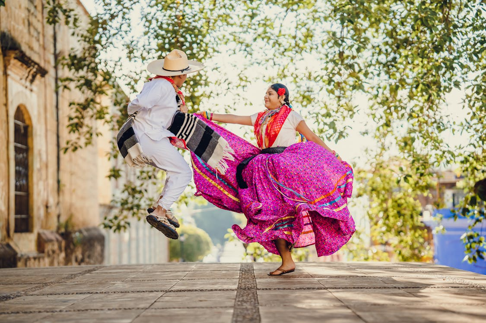

Jarabe MixtecoEl Jarabe Mixteco es el nombre de un bailable folclórico representativo de la Región de la Mixteca Oaxaqueña. Está compuesto por varios sones que son originarios de esta región, que fueron recompilados por el maestro Antonio Martínez Corro coreografiados por Cipriano Villa Hernández.Historia y patrimonio cultural La vestimenta para la mujer mixteca es: blusa de manta la cual es bordada alrededor del cuello y mangas también la Falda “de holán al aire” hecha de popelina con flores estampadas y adornada con 3 listones de colores; por el costado izquierdo de esta prenda reluce un fajo de7 listones de colores llamativo. Debajo de ella lleva un refajo de manta.Se utiliza un rebozo negro como ceñidor que simboliza el estado civil y la maternidad. La mascada que la mujer porta en el cuello, la utiliza para limpiar el sudor que emana de su rostro por e l esfuerzo realizado por ser mujer laboriosa. Porta collares de “papelillo” de distintos matices. En el peinado se hace trenzas que adorna con 4 listones de colores y se coloca en el pelo un clavel rojo. Para proteger sus delicados pies, usa huaraches de dos correas blancas. El hombre viste calzón y camisa de manta, en la cintura lleva un paliacate y otro en el cuello, en el hombro porta un cotón de lana, utiliza sombrero de palma en el estilo de cuatro pedradas con ala ancha y también usa huaraches de 3 correas blancas. |
 |